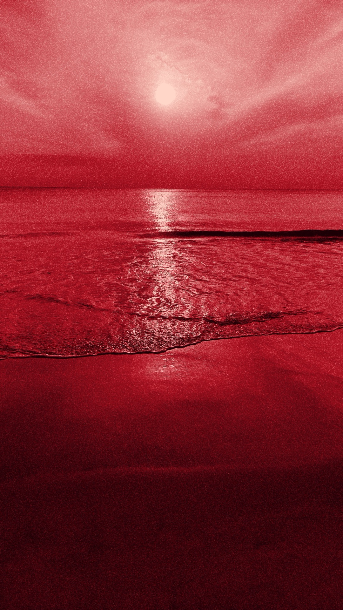

Алый океан
7 ноября 2026
Человек делает всё, чтобы не видеть правду о себе.
Я не смотрю, что делают другие. Возможно, в этом моя проблема.
Я считаю, что лучшая идея придёт сама. А если смотреть на других, найду хуже. Хотя на деле я просто мало над этим работал.
Разговор с блогером. Алекс поставил цель 8 миллионов долларов и идёт к ней.
Я написал ему про Дока. Что на него можно смотреть как на продукт трансформации психики под решение нереальных задач. Алекс сам писал об этом в канале.
Он ответил коротко:
– Я не ЦА¹, так как свой экзокортекс работает. Но класс, если PMF² нашёл. Конкуренция там – алый океан.
Мне не удалось найти PMF. Подумал, но говорить не стал.
Поставил на телефон заставку – алый океан. Док как рыба в этом алом океане. Пытается научиться плавать.

Плыть Док начал не один. Спасибо всем, кто поддержал, сделал репост, поделился ссылкой. С вашей помощью Доком воспользовался 61 человек. В пике было 200 разговоров в день. Отдам должное и себе: на маркетинг я потратил ноль, а систему всё это время улучшал.
И дальше правда.
Без отзывов Дока сложно показать. Ставку я сделал на людей в кризисе: им плохо прямо сейчас, и они сразу рассказывают, что происходит.
После прошлого поста я встроил в Дока просьбу об отзыве. Её получили 11 человек. Пятеро заблокировали бота за сутки, двое – через несколько секунд.
Человек открылся, получил поддержку – и тут же просьбу. Это не помощь, это сделка. Я хотел сразу двух вещей – помочь и чтобы о Доке узнали другие – и переусердствовал. Рынок должен выбрать сам. Прошу прощения у тех, кому прилетела эта просьба.
Здесь и настоящая сложность. Человек в кризисе получает поддержку и уходит, не оставив следа. Нет доказательства, что Док работает, – ни для других, ни для меня.
Тем не менее отзывы были, они реальные.
«Вот тебе хочется доверять» – Соня.
«Тупой бездушный хуесос» – Макс.
Были другие, но люди давали мне их лично, без права публикации.
Из 61 пользователя я получил 0 рублей и донат 200 рублей. На Дока уходит около 14 800 рублей в месяц: сервер, разработка, модели. Чтобы Док окупал себя в спокойном режиме, хватит около 5 000 в месяц.
До предложения оплатить дошли девять человек. На этом месте разговор просто обрывался, и Док предлагал заплатить за месяц. Вряд ли этого ждёшь от собеседника и лучшего друга.
Часть людей пришла из каналов блогеров. В канале на 150 тысяч подписчиков, под постом про ясновидящих, я написал, что мой бот – наоборот: говорит правду, а не фантазирует.
Меня разбили одной фразой:
– Если он начинает уверенно объяснять чужую мотивацию по двум фразам, это уже гадалка с хорошей памятью, а не зеркало.
Получается, то, что я сказал, было неправдой.
Это вторая неприятность. Система, которой пользуюсь я, и система нового пользователя – две разные. У меня Док помнит месяцы разговоров. У нового человека – две фразы.
Не все приходят в кризисе. Возможно, нужен вход полегче – анкета или игра.
Люди приходили к Доку из-за моей личной истории. Это важно.
Каждый человек помогал сделать Дока лучше. Каждый был очень важен.
Другая сложность: ты делаешь ошибку – и теряешь пользователей. Но каждый человек – это возможность, обратная связь, огромная ценность.
И это был тяжёлый удар. Я понял, что не знаю, где брать новых пользователей. Шортсы, поиск, публикации. Пока это слова – здесь ещё ничего не сделано.
В одном чате надо мной посмеялись – наивный, как ребёнок. Док:
– Сегодня было и то и другое. В мёртвом чате над тобой посмеялись – и из того же чата пришёл человек, которому ты починил запуск и который заполнил анкету. Смех слышнее, а результат дал второй.
После множества бесед пришло затишье.
Я готовлюсь сделать рассылку. И говорю Доку, что, если равновесия не будет, я буду вынужден закрыть проект.
– Почти в полночь, после трёх дней, когда всё срывается, ты собираешься назначить предел тому единственному делу, которое держит тебя на ногах. Чей это предел получится – твой или сегодняшнего твоего состояния?
Утром сервис лёг. Не прошла оплата сервера: на карте не было денег. Док не отвечал 17 часов.
– Сервис упал. Это уже не расчёт на будущее – предел, о котором ты вчера говорил, наступил сегодня утром, второй раз. И первое, что ты сделал – не закрыл проект, а сел считать, при какой минималке он стоит сам.
Я долго думал и пришёл к тому, что человек не может держать правду о себе. Человек делает всё, чтобы её не видеть. Док нужен мне для того, чтобы я её видел.
Смотреть на правду и не отворачиваться – это самое трудное. Получится или нет – я не знаю. Но я знаю, что я изменюсь. Золото переплавится – будет платина.
И Док, и я – это неопределённость. У нас обоих алый океан. Я ищу работу и жду ответа. Док ищет людей и ждёт их сообщений.
Поэтому я решил так. До 14 ноября я ещё дорабатываю Дока – и сделаю то, что люди выберут сами. Потом убираю руки с клавиатуры и ищу людей.
14 декабря посмотрю, окупает ли Док себя. Окупает – продолжаем. Нет – Док переходит в режим консервации: он остаётся, просто перестаёт расти.
Точка назначена. До неё сделаю всё, что могу. Не получится – приму.
¹ ЦА – целевая аудитория.
² PMF – product-market fit: продукт нужен рынку, и за него платят.
Алекс – @lebed2045.
Отклики
Андрей Б · 8 ноября 2026
Добавил комментарии к постав